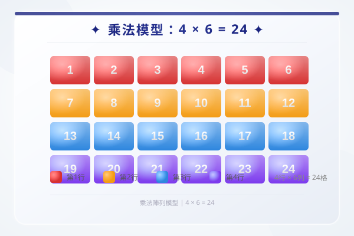

| # | 題目 | 答案 | 類型 |
|---|---|---|---|
| 1 | 12 係唔係 3 的倍數？點解？ | ___ | manual |
| 2 | 寫出 4 的首 5 個倍數。 | ___ | manual |
| 3 | 以下邊個係 18 的因數？A.4 B.5 C.6 D.7 | ___ | manual |
| 4 | 一個數的因數有 1,2,3,6。呢個數係幾多？ | ___ | manual |
| 5 | 100 以內，9 的倍數有幾個？ | ___ | manual |
| 6 | 寫出 5 的首 6 個倍數。 | ___ | manual |
| 7 | 列出 18 的所有因數。 | ___ | manual |
| 8 | 判斷：24 係唔係 6 的倍數？6 係唔係 24 的因數？ | ___ | manual |
| 9 | 列出 6 的首 8 個倍數。邊幾個係雙數？ | ___ | manual |
| 10 | 寫出 12 的所有因數。總共有幾個？ | ___ | manual |
| 11 | 判斷對錯：3 係 27 的因數，27 係 3 的倍數。啱唔啱？ | ___ | manual |
| 12 | 100 以內，7 的倍數有幾個？最大係？ | ___ | manual |
| 13 | 列出 36 的所有因數。用配對法（1×36, 2×18, ...）。 | 36 | auto |
| 14 | 一個數的因數有 1,2,4,8,16。呢個數 = ？ | ___ | manual |
| 15 | 以下邊個數係 8 的倍數？A. 34 B. 48 C. 62 D. 76 | ___ | manual |
| 16 | 寫出 24 的所有因數。有幾多個？如果將 24 換成 25，因數數量有咩唔同？ | ___ | manual |
| 17 | 一個數同時係 12 和 18 的倍數，而且 < 100。呢個數可能係？（列晒出黎） | ___ | manual |
| 18 | 一個數有 6 個因數，其中 1 和 自己 係最細和最大。若最細的 3 個因數係 1,2,3，求此數。 | ___ | manual |
| 19 | 找出 100 以內，因數數量最多的一個數。（提示：試36、48、60、72、96...） | ___ | manual |
| 20 | 一個數係 6 的倍數，又係 8 的倍數，而且係最細嘅三位數。呢個數係幾多？ | ___ | manual |
| 21 | 小明話：「24 的因數之中有 4 個係雙數。」佢啱唔啱？列出所有因數再答。（提示：24=1,2,3,4,6,8,12,24） | ___ | manual |
| 22 | 一個兩位數，它的因數加埋（唔計自己）= 自己。呢個數叫做「完全數」。100 以內搵到一個，係幾多？（提示：28） | ___ | manual |
| 23 | 一個數小於 50，佢係 4 的倍數，而且有 6 個因數。呢個數可能係幾多？（提示：列出 4 的倍數再篩選） | ___ | manual |
| 24 | 操場上，學生可以排成每行 8 人，也可以排成每行 12 人（都沒有剩餘）。學生最少有幾人？ | 8 | manual |
| 25 | 一個數是 15 的倍數，也是 20 的倍數，而且 < 150。列出所有可能。 | ___ | manual |
| 26 | 24 粒糖和 36 塊餅乾，要分成相同的禮包。每包糖數一樣，餅數一樣，最多可以分幾包？ | 0...24 | manual |
| 27 | 兩個數字的公倍數中，最細嗰個係 60。呢兩個數可能係？（俾兩組答案） | ___ | manual |
| 28 | 甲每隔 6 日去圖書館，乙每隔 8 日去。兩人今日一齊去咗，幾多日後會再一齊去？ | 0...6 | manual |
| 29 | 24 個同學排隊，可以排成幾多行？（每行人數要相同，而且每行 ≥ 2 人）列出所有可能性。 | 12 | manual |
| 30 | 老師有 45 粒糖，想分俾全班同學每人一樣多而冇剩。全班最多可以有幾多人？（提示：因數） | ___ | manual |
| 31 | 一個花園長 18m 闊 12m。要種樹，每棵樹之間距離要相同（整數米），而且要種在邊界上。最疏可以隔幾多米種一棵？ | 1...6 | manual |
| H1 | 寫出 9 的首 5 個倍數。 | ___ | manual |
| H2 | 列出 20 的所有因數。 | ___ | manual |
| H3 | 16 係唔係 4 的倍數？4 係唔係 16 的因數？ | ___ | manual |
| H4 | 50 以內，6 的倍數有邊幾個？ | ___ | manual |
| H5 | 列出 30 的所有因數，用配對法。 | ___ | manual |
| H6 | 一個數的因數有 1,3,5,15。呢個數 = ？ | ___ | manual |
| H7 | 列出 28 的所有因數。用配對法。 | ___ | manual |
| H8 | 100 以內，9 的倍數有邊幾個？最大係？ | ___ | manual |
| H9 | 搵出 25 的所有因數。點解 25 的因數特別少？ | ___ | manual |
| H10 | 找出 100 以內，同時係 8 和 12 的倍數的所有數字。 | ___ | manual |
| H11 | 一個數小於 50，它的因數有 8 個。這個數可能係？ | ___ | manual |
| H12 | 一個數的倍數之中，第 5 個係 60。呢個數係幾多？ | ___ | manual |
| H13 | 有兩個兩位數，佢哋的因數數量相同（都係 6 個）。搵出呢兩個數。（提示：試下 12、18、20...） | ___ | manual |
| H14 | 一個數，佢的所有因數加埋（唔包自己）= 自己。呢種數叫做「完全數」。100 以內只有一個完全數，係幾多？搵出嚟並寫出所有因數。 | ___ | manual |
霖楓學苑 · LF Academy · 自動答案生成器 v1.0 · 手動題目請老師覆核